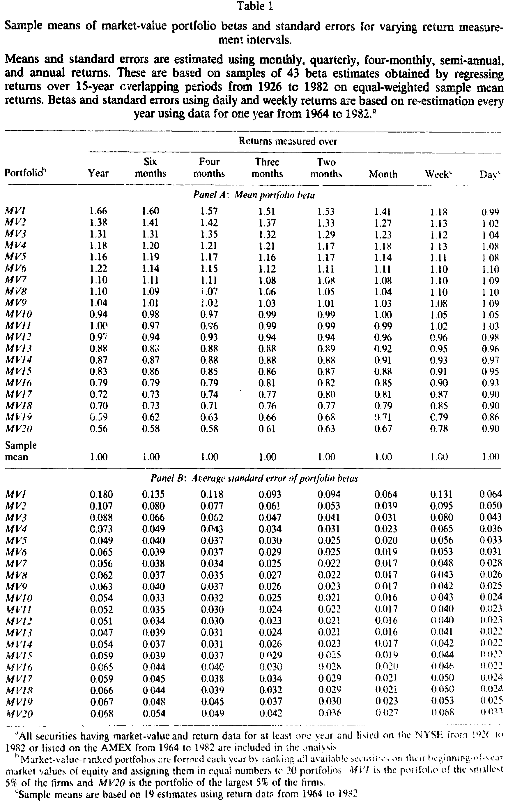
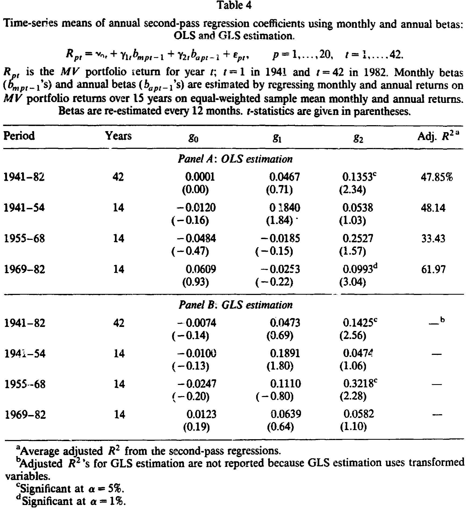
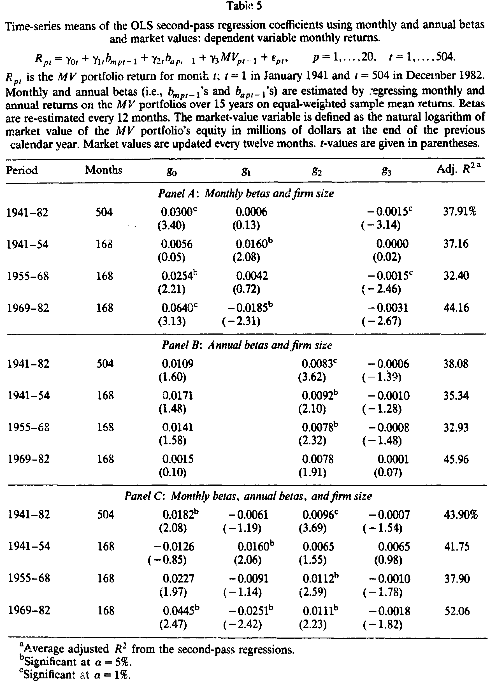
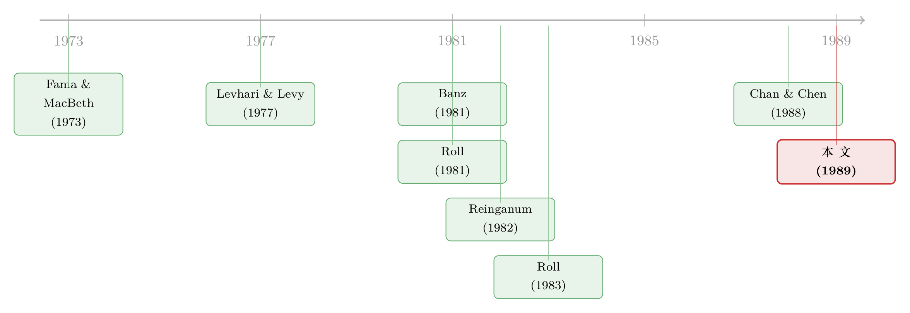

换一把尺子量 beta，「小公司之谜」就消失了
本文读的是 Handa, Kothari & Wasley (1989, Journal of Financial Economics)：所谓的「规模效应」对你用多长的收益区间去估 beta 极其敏感——把估 beta 的区间从「月」换成「年」，小公司那块「无法被风险解释」的超额收益，就在统计上消失了。换句话说，规模溢价之谜，很可能是一桩「量错了风险」的公案。
1 一个迟迟不肯散去的幽灵
故事要从一个让无数资产定价学者夜不能寐的「幽灵」说起。
Banz (1981) 发现，如果你把所有股票按市值排序，最小的那一档，其平均收益要比 资本资产定价模型 (capital asset pricing model, CAPM) 所预言的高出一大截——而且这个「高出来」的部分，单靠 beta 是解释不掉的。这就是著名的 规模效应 (size effect)，或者叫「小公司之谜」。它像一根刺，扎在 CAPM 的心脏上：如果一个模型连「公司大小」这种最朴素的特征都管不住，那它凭什么自称是风险与收益的完整刻画？
接着，一个自然的问题是：这个超额收益，到底是「真的」额外收益，还是我们把风险给量小了？
Roll (1981) 提出了一个温和但要命的猜想：小公司的 beta 可能被系统性地低估了。如果真是这样，那所谓的规模溢价，不过是「被漏掉的那部分风险补偿」披上了一件马甲。Reinganum (1982) 顺着这条线做了一次直接检验，发现规模效应确实会被「低估的风险」放大——尤其当你用短区间（比如日度）收益去估 beta 的时候。
到这里，剧情看似明朗：beta 量得不准，所以规模效应是个幻觉。但真正关键的一步，本文三位作者偏偏在所有人都默认「用月度收益估 beta 天经地义」的地方，钉下了一颗钉子——收益区间本身，会系统性地改变 beta。而且，这种改变不是因为短区间数据有非同步交易的噪声，而是一件更底层、更绕不开的事：买入持有收益 (buy-and-hold returns) 的方差和协方差，根本不会随区间「等比例」缩放。
2 为什么 beta 会随「区间」呼吸
我们先把这件事在纸上算清楚，因为它是全文的地基。
把收益定义成 价格相对数 (price relative)：从时点 0 到时点 n 的 n 期买入持有收益就是 \(R_i(n) = P_n/P_0\)。假设单期收益序列无自相关、分布平稳，记单期期望收益 \(\mu_i = E(P_1/P_0)\)，单期协方差 \(\sigma_{ij}\)。
第一步，n 期买入持有收益是单期收益相对数的连乘，于是 n 期的期望收益是单期的 n 次方：
$$\mu_i(n) = [\mu_i]^n$$
第二步，算 n 期收益之间的协方差。利用序列独立性，连乘的期望等于期望的连乘：
$$\sigma_{ij}(n) = E[R_i(n)R_j(n)] - E[R_i(n)]\,E[R_j(n)] = \big(E[R_i(1)R_j(1)]\big)^n - [\mu_i\mu_j]^n$$
而 \(E[R_i(1)R_j(1)] = \sigma_{ij} + \mu_i\mu_j\)，代回即得论文脚注 7 的那个漂亮结果：
$$\sigma_{ij}(n) = [\sigma_{ij} + \mu_i\mu_j]^n - [\mu_i\mu_j]^n$$
第三步，beta 照定义是「资产对市场的协方差除以市场方差」。把 \(j\) 换成市场代理 \(m\)，n 期 beta 就是：
现在请盯住这个分式：分子和分母都是「某个底数的 n 次方再相减」，可两个底数并不相等。这意味着，当 \(n\) 从 1 变到 12 再变到 252 时，分子和分母不会等比例地一起变大。于是——beta 随 \(n\) 漂移，这是个纯粹的代数事实，与交易摩擦毫无关系。
一个反直觉的角落：如果用 连续复利收益 (continuously compounded returns，即价格相对数取对数)，方差和协方差就会等比例地随区间放大，beta 反而不随区间变化。本文的全部张力，恰恰来自实证里大家普遍使用的是买入持有收益——这才是 beta 会「呼吸」的根源。
那它往哪个方向漂？Levhari and Levy (1977) 早就给出了证明，本文把它的实证含义讲透了：
- 对给定区间 \(n\)，beta 比值 \(\beta_i(n)/\beta_i\) 在横截面上随 \(\mu_i\) 递增——这暗示风险—收益关系无论用哪个区间都为正斜率；
- 对给定的 \(\mu_i\)，若 \(\beta_i > 1\)，则 \(\beta_i(n) > \beta_i(n-1) > \cdots > \beta_i\)；若 \(\beta_i < 1\)，则次序整个反过来。
一句话：区间越长，高风险股票的 beta 越被推高，低风险股票的 beta 越被压低，两端的 beta 价差被拉大。
这正是数据所展示的。本文用按市值排序的 20 个组合（MV1 最小、MV20 最大），把 beta 在 8 种区间上各估一遍。最小市值组合 MV1 的 beta，从月度的 1.41 一路升到年度的 1.66；而最大市值组合 MV20 的 beta，从月度的 0.67 跌到年度的 0.56。两端朝相反方向张开，与理论严丝合缝。

Table 1
注意，这里小公司 MV1 是高 beta 端（beta>1），所以拉长区间反而把它的 beta 抬得更高——而恰恰是「月度 beta 漏掉了这部分风险」。规模效应的幽灵，第一次露出了它的真身。
作者特意排除了一个常见的「替罪羊」。日度、周度 beta 的剧变通常被归因于非同步交易 [Scholes and Williams (1977)、Cohen et al. (1983)]。但本文聚焦的是月度及更长区间，并用「序列无关的收益成分」重估了一遍 beta，结果与原表几乎无差别——所以这里的 beta 敏感性，不是交易摩擦造成的，而是买入持有收益的代数本性。
3 测量误差如何「凭空」制造一个规模效应
讲清了 beta 会变，下一个问题就尖锐了：拉长区间，beta 的标准误也会变大（年数据观测点更少）。那么——会不会两件事其实是同一件事？也就是说，年度 beta 之所以「更能解释收益」，纯粹是因为它噪声更大、把规模变量挤了出去？
要回答它，得先把「测量误差」这把刀的作用方向算明白。考虑 Fama-MacBeth 式的第二轮横截面回归：
$$R_{pt} = \gamma_{0t} + \gamma_{1t}\,b_{p,t-1} + \gamma_{2t}\,MV_{p,t-1} + \varepsilon_{pt} \tag{3}$$
其中 \(b_{p,t-1}\) 是用 \(t-1\) 期之前数据估出的 beta，它以误差 \(u\) 测量「真」beta：\(b = \beta + u\)，\(u\) 均值为零、方差 \(\sigma_u^2\)、横截面无关；公司规模 \(MV\) 则被假设无测量误差。在这些假设下，beta 系数的概率极限是：
$$\text{plim}\,\hat\gamma_1 = \frac{\sigma_1^2\sigma_2^2 - \sigma_{12}^2}{(\sigma_1^2 + \sigma_u^2)\sigma_2^2 - \sigma_{12}^2}\,\gamma_1^* \tag{4}$$
这里 \(\sigma_1^2 = \text{var}(\beta_{p,t-1})\)、\(\sigma_2^2 = \text{var}(MV_{p,t-1})\)、\(\sigma_{12} = \text{cov}(\beta, MV)\)。分母比分子多了一项 \(\sigma_u^2\sigma_2^2\)，所以 beta 系数被朝零方向压缩，且 \(\sigma_u^2\) 越大、压得越狠——这是经典的衰减偏误。
但真正的反转藏在规模系数里：
$$\text{plim}\,\hat\gamma_2 = \gamma_2^* + \frac{\sigma_u^2\,\sigma_{12}}{(\sigma_1^2 + \sigma_u^2)\sigma_2^2 - \sigma_{12}^2}\,\gamma_1^* \tag{5}$$
现在做一次符号推演。Banz (1981) 早已记录：公司规模与 beta 负相关，即 \(\sigma_{12} < 0\)。分母可证为正，\(\gamma_1^* > 0\)（风险有正价格），而在没有任何理论把规模与期望收益联系起来时，规模的「真」系数 \(\gamma_2^* = 0\)。于是第二项是负的——
$$\gamma_2^* = 0 \;\Longrightarrow\; \text{plim}\,\hat\gamma_2 < 0$$
结论惊人：哪怕规模本身对收益毫无作用，只要 beta 被测量误差污染，回归也会自动吐出一个显著为负的规模系数。 而且 \(\sigma_u^2\) 越大，这个虚假的规模效应越强。这就为「为什么短区间 beta 下规模效应更猛」给出了纯统计学的解释。
到这里，棋局变得微妙。测量误差假说预言了两件事：用噪声更大的年度 beta，应当更难解释收益，且应当伴随更强的规模效应。如果数据反过来——年度 beta 不但没被噪声淹没，反而把规模效应赶走了——那测量误差就不是主因，区间差异反映的是 beta 的真实不同。这就成了一个可以让数据来裁决的经验问题。
4 让数据开口：当年度 beta 走上证人席
作者把月度 beta \(b_m\) 与年度 beta \(b_a\) 同时塞进第二轮回归：
$$R_{pt} = \gamma_{0t} + \gamma_{1t}\,b_{mp,t-1} + \gamma_{2t}\,b_{ap,t-1} + \varepsilon_{pt} \tag{7}$$
样本是 1941—1982 的 504 个月，逐月估计后取时间序列均值；考虑到 20 个市值组合残差间的截面异方差与互相关，作者同时报告 OLS 与 GLS（用残差协方差阵的 Choleski 分解做变换）结果。

Table 4
结果是这样的：在全样本 GLS 回归里，年度 beta 的系数显著为正（约 0.71%/月，t ≈ 2.89），而月度 beta 的系数虽然数值不小（约 0.79%/月），其 t ≈ 1.76 在常规水平上与零无异。换句话说，当两把尺子同台竞技，统计精度更差的年度 beta 反而把月度 beta 比了下去——这与「年度 beta 只是噪声更大」的预测正好相反。OLS 与 GLS 结果高度一致，分子样本期里这一格局也大体稳定。
最后一步，也是全文的落点：把公司规模也加进来，与月度 beta、年度 beta 一起竞争。

Table 5
答案干净利落：唯有年度 beta 的系数仍然显著为正；月度 beta 与公司规模，都退回到与零无法区分的位置。 规模效应不是被「修正」掉的，而是当我们用一把更长的尺子量风险时，它自己消失了。
回到前面 Table 2 的描述性证据就更直观了：最小组合 MV1 月均收益 2.40%、年度 beta 高达 1.66；最大组合 MV20 月均收益 0.88%、年度 beta 仅 0.56。小公司的高收益，配上一个被月度数据藏起来、却被年度数据照出来的高 beta——风险与收益，原来一直对得上账，只是我们之前用错了量风险的工具。
5 文献脉络
把这条线索摆开看，它其实是一场「规模效应到底是不是风险」的长期拉锯。
最早，Banz (1981) 与 Reinganum (1981) 把规模效应钉成了 CAPM 的头号异象。紧接着，Roll (1981) 抛出「小公司风险被低估」的猜想，Reinganum (1982) 顺势证实短区间下规模效应被放大，Roll (1983) 与 Blume and Stambaugh (1983) 则提醒大家：买入持有与每日再平衡算出来的收益能差出 50% 的小公司溢价——「怎么算收益」本身就是个雷区。
与此平行的另一条暗线，是 Levhari and Levy (1977) 早在十多年前就证明的「投资期限会改变 beta」，以及 Scholes and Williams (1977)、Cohen et al. (1983) 关于非同步交易如何扭曲短区间 beta 的工作。本文的高明之处，在于把这两条线接到了一起：它借用 Levhari-Levy 的区间—beta 代数，又用 Fama and MacBeth (1973) 的第二轮回归框架去检验，最终把「规模效应」改写成「区间错配下的 beta 测量问题」。Chan and Chen (1988) 关于「以规模作为风险工具变量」的讨论，则与本文的测量误差分析互为呼应。

这条思路此后绵延不绝。后来人们意识到，beta 不只随区间变，还随时间、随商业周期变——风险一旦「会看天」，规模、价值这些异象往往就被收编进去（关于这一点，可参见《会「看天」的 beta：当风险收编了价值与规模，动量却躲进了商业周期》与《时变的 beta，被低估了二十年的风险》）。而「beta 偷偷换了脸会让定价检验失真」这件事，也几乎是「输家翻身」之谜的同一种病（见《「输家翻身」之谜：真相不是市场犯傻，而是 beta 偷偷换了脸》）。本文是这一整套「先怀疑尺子、再怀疑世界」方法论的早期范本。
6 评论与延伸（Q&A + 研究方向）
(a) 几个可能的疑问
Q：beta 随区间变，到底是统计假象还是真实的风险差异？
是真实的代数事实，不是估计噪声。只要用的是买入持有收益，eq (2) 的分子分母按不同底数取 n 次方，beta 必然随区间漂移；若改用连续复利收益，方差协方差等比例缩放，beta 就不随区间变。所以这不是「样本太小」的问题，而是收益的复利结构决定的。
Q：那年度 beta「赢了」，会不会只是因为它噪声大，把别的变量挤掉了？
这正是测量误差假说的预测，而数据否决了它。eq (5) 表明：噪声更大的 beta 应当制造更强的规模效应、且更难解释收益。但实证里恰恰相反——精度更差的年度 beta 显著为正（t≈2.89），还顺手把规模效应抹平了。方向不对，所以主因不是噪声。
Q：为什么是「年度」beta 这么神，而不是季度、半年度？
文中 Table 1 显示 beta 的漂移在月度→季度之间最剧烈，之后边际放缓但仍在继续。年度只是把这种「真实的长区间 beta」推到足够明显、足以在回归里压过规模变量的程度；并非年度有什么神圣性，而是区间越长、高低风险 beta 的价差被拉得越开。
Q：用 15 年重叠窗口估 beta，参数稳定吗？
作者承认这是个取舍。但他们指出，由于组合成分每年重排，参数非平稳问题没有「单只股票估 15 年」那么严重；并援引
Chan and Chen (1988)：5 年与 15 年月度 beta 的相关系数高达0.88，说明拉长窗口尚可接受。
Q：这是否意味着 CAPM 被「救活」了？
谨慎地说，是「在这个检验里站住了」。本文说明：一旦风险的度量与投资者真实的持有期限匹配，规模这个特征就不再有增量解释力。但它没有证明月度投资者也该用年度 beta——它真正动摇的，是「月度 beta 是唯一正确尺子」这个隐含假设。
Q：买入持有 vs 再平衡，这个细节真有那么重要？
重要到能改写结论。
Roll (1983)报告两种算法的小公司溢价能差50%。本文坚持用等权样本均值收益作市场代理、并严格按买入持有累计长区间收益，正是为了不让「再平衡」偷偷篡改协方差结构——否则连 eq (2) 的前提都不成立。
(b) 几个可能的研究问题与提案
- 公司债市场里的「区间—beta」错配
- 【经济故事】公司债收益的偏度与久期结构远比股票复杂，信用利差对「用日度还是月度估系统性风险」可能同样敏感。若高收益债的「信用 beta」在长区间下被显著抬高，那么文献里许多「信用利差无法被风险解释」的异象，可能也是区间错配的产物。
-
【可行性】中。需要 TRACE 逐笔成交构造干净的债券买入持有收益、以及一个公司债市场因子；识别上可直接平移本文的双 beta 第二轮回归。难点在于债券交易稀疏，长区间收益的非同步问题比股票更棘手。
-
外资持有人的「有效持有期」与他们感知的 beta
- 【经济故事】不同投资者的真实持有期限不同（高频做市商 vs 养老金 vs 主权基金）。若按本文逻辑，长期外资持有人「感知」到的 beta 与短线本土交易者并不相同，这可能为「外资偏好低 beta 大盘股」之类的现象提供一个纯测量层面的解释。
-
【可行性】中偏低。需要把持有期限映射到收益区间，并有投资者类型层面的持仓数据（如 13F 或托管层面数据）。识别困难在于持有期内生于风险偏好，需找外生冲击（如锁定期、税收期限）。
-
区间敏感性作为「异象稳健性」的统一筛子
- 【经济故事】把本文的检验做成一个通用诊断：对每个横截面异象，系统比较「短区间 beta」与「长区间 beta」下其 alpha 的存亡。能被长区间 beta 吸收的异象，更可能是风险；不能被吸收的，才值得当真。
-
【可行性】高。CRSP 数据齐备，方法就是把异象组合收益对多区间 beta 回归。是一个 doable、且能立刻产出大样本结论的项目。
-
流动性溢价与区间错配的纠缠
- 【经济故事】流动性差的小盘股既被怀疑「beta 低估」，又被怀疑「流动性溢价」。本文的代数提供了一个干净的分离：先用长区间 beta 吸走风险那一块，再看流动性变量是否还有增量解释力。
- 【可行性】中。需要 Amihud 非流动性等度量与多区间 beta 并置回归；识别上要小心流动性与 beta 测量误差的共线性。
7 参考文献
- Banz, R.W. (1981). The relationship between return and market value of common stocks. Journal of Financial Economics 9(1), 3–18.
- Blume, M. and Stambaugh, R. (1983). Biases in computed returns: An implication to the size effect. Journal of Financial Economics 12(3), 387–404.
- Chan, K. and Chen, N. (1988). An unconditional asset pricing test and the role of firm size as an instrumental variable for risk. Journal of Finance 43(2), 309–325.
- Cohen, K., Hawawini, G., Maier, S., Schwartz, R., and Whitcomb, D. (1983). Friction in the trading process and the estimation of systematic risk. Journal of Financial Economics 12(2), 263–278.
- Fama, E. and MacBeth, J. (1973). Risk, return and equilibrium: Empirical tests. Journal of Political Economy 81(3), 607–636.
- Handa, P., Kothari, S.P., and Wasley, C. (1989). The relation between the return interval and betas: Implications for the size effect. Journal of Financial Economics 23(1), 79–100.
- Levhari, D. and Levy, H. (1977). The capital asset pricing model and the investment horizon. Review of Economics and Statistics 59(1), 92–104.
- Reinganum, M.R. (1981). Misspecification of capital asset pricing: Empirical anomalies based on earnings yields and market values. Journal of Financial Economics 9(1), 19–46.
- Reinganum, M.R. (1982). A direct test of Roll's conjecture on the firm size effect. Journal of Finance 37(1), 27–35.
- Roll, R. (1981). A possible explanation of the small firm effect. Journal of Finance 36(4), 879–888.
- Roll, R. (1983). On computing mean return and the small firm premium. Journal of Financial Economics 12(3), 371–386.
- Scholes, M. and Williams, J. (1977). Estimating betas from nonsynchronous data. Journal of Financial Economics 5(3), 309–327.